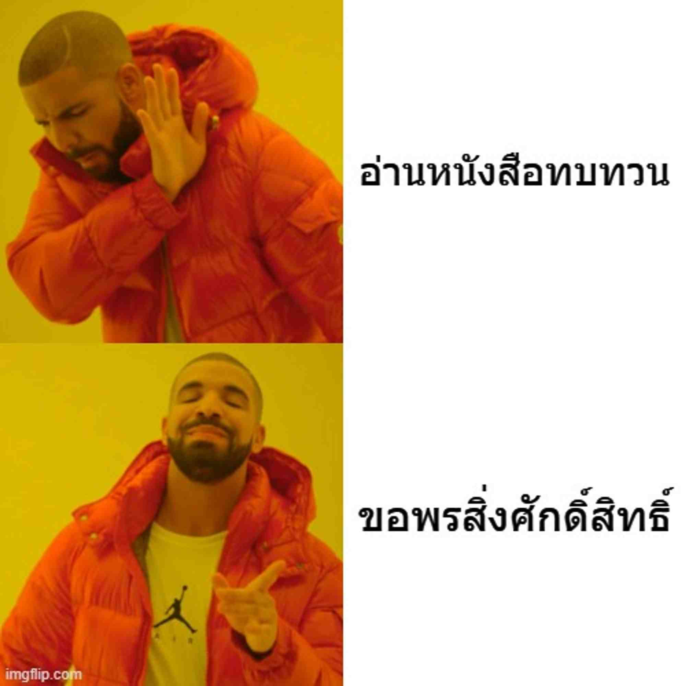

ชื่อ‑นามสกุล: น.ส.รุจิรัตน์ แสงชัย
ชื่อเล่น: ปุ้ย
สาขาวิชา: CAI
กลุ่ม (Section): 1
อยากเข้าใจทั้งการทำงานของหน้าเว็บและการจัดการข้อมูลเบื้องหลัง เพื่อที่จะสามารถออกแบบและสร้างเว็บที่ใช้งานได้จริงตั้งแต่ต้นจนจบ
หวังว่าจะได้เรียนรู้การสร้าง API, การเชื่อมฐานข้อมูล และทักษะที่จำเป็นในการพัฒนาเว็บทั้งหน้าและหลังให้ใช้งานได้จริง
จุดอ่อน: ความเข้าใจในโครงสร้างข้อมูลและตรรกะการเขียนโปรแกรมยังไม่แน่นพอ
แนวทางการพัฒนา: ฝึกเขียนโปรแกรมเป็นประจำ อ่านโค้ดตัวอย่าง ทำโปรเจ็กต์เล็กๆ และศึกษาแนวทางออกแบบฐานข้อมูล